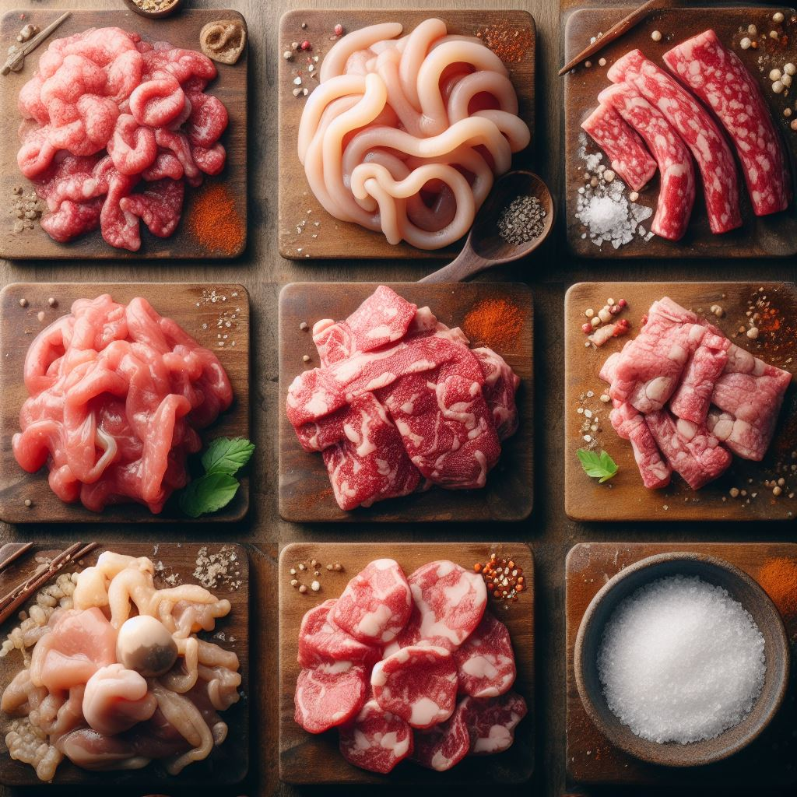

Cow Offal

Moooo! Nothing screams flavor like cow innards! From mouth-watering stomach meat to
slippery intestines,
there's a part of the cow for everyone. Now you can bring this delicacy to your dinner table!
Ingredients
- Cow (for the internal organs)
- Your favorite seasoning or soy sauce
- A hearty appetite!
Steps
- Find a cow
- Assert dominance by mooing at it loudly
- Butcher the cow and remove all its organs
- Prepare your favorite sauce or other seasonings
- Chow down!